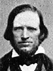
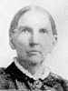

The Family of Shadrach and Betsey Quimby Roundy
Home
Histories
Charts
Photos
Maps
Restricted
News
Info
Contact
| Shadrach Roundy 1 Jan. 1789 - 2 July 1872 Married 27 Feb 1815 to Betsey Quimby |   The Shadrach Roundy Home The Shadrach Roundy HomeShadrach and Betsy Shadrach Roundy Betsy Quimby Roundy |
1 23 23 |
Lauren Hotchkiss Roundy 21 May 1815 - 11 Mar 1900 Married Johanna Carter 16 Oct 1842 Married Jane Ann Koyle 1 July 1865 Married Martha Edmiston 5 Nov. 1868 The 1st child of Shadrach Roundy and Betsey Quimby |
| Julia Rebecca Roundy 5 Apr 1815 - 1837 Married Newell Kimball Whitney 19 Sep 1837 The 2nd child of Shadrach Roundy and Betsey Quimby |
 12 12 3 3 | Lorenzo Wesley Roundy  18 June 1819 - 24 May 1876 Married Adeline Whiting 1 May 1843  Married Susannah Wallace 16 May 1847 Married Prisella Parrish 22 Apr 1857
The 3rd child of Shadrach Roundy and Betsey Quimby |
| Lauretta Roundy Nov. 1821/1822 - 18 Oct 1907 Married David Hamer Beck 25 Apr 1841 The 4th child of Shadrach Roundy and Betsey Quimby |
 | Samantha Roundy 2 June 1824 - 12 July 1906 Married John Davis Parker 3 Feb 1846 The 5th child of Shadrach Roundy and Betsey Quimby |
 1 1 234 234 |
Jared Curtis Roundy 5 Jan 1827 - 22 May 1895 Married Lovisa Jenne 26 Feb 1852 Married Eliza J. Snyder 9 May 1856 Married Elizabeth Jefford Drake Bellam Davis 17 Jan. 1869 Married Ellen (Nellie) M. White 20 Dec. 1883 The 6th child of Shadrach Roundy and Betsey Quimby |
|  | Almeda Sophia Roundy 7 Mar. 1829 - 25 Sep. 1912 Married John Davis Parker 3 Feb. 1846 The 7th child of Shadrach Roundy and Betsey Quimby |
| * | William Felshaw Roundy Nov. 1831 - 14 Aug. 1839 The 8th child of Shadrach Roundy and Betsey Quimby |
| 12 | Nancy Jane Roundy 20 May 1836 - 6 July 1885 Married Henry D. Lindsay 25 Jan. 1852 Married Calvin Icabod Foss 1856 The 9th child of Shadrach Roundy and Betsey Quimby |
| * | Malinda Roundy 23 June 1837/1838 - 1838 The 10th child of Shadrach Roundy and Betsey Quimby |
{kind=link}
{kind=link}
{kind=link}